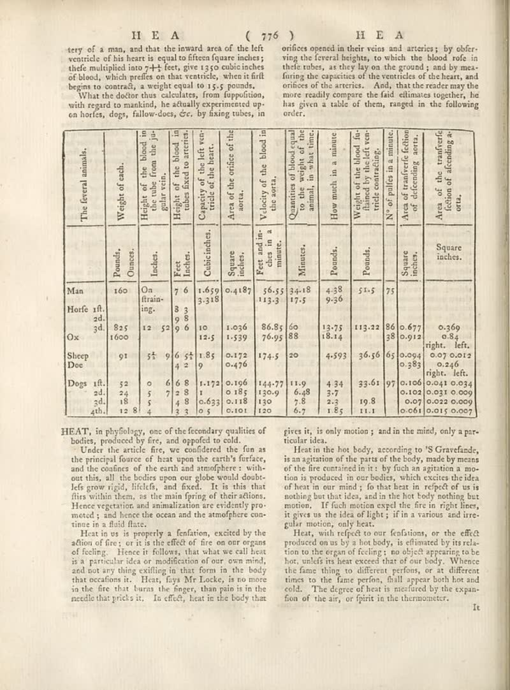

page-1032-e28420685b47.jpg

Page ID: britannica:309f765b1ecc83e0a7f7762e44b4a927a7555443:train:1032
Running head: HE A ( 776 )
Image SHA-256: e28420685b477a2b18e236ef8ee526cd07fd1053082d5825198b00a8171278e0

HE A ( 776 ) [Page-header]
tery of a man, and that the inward area of the left ventricle of his heart is equal to fifteen figures under; their multiplied inn =+1 for, give 13 to cubicinches of blood, which prefix on that ventricle, when it drift begins to control, a weight equal to 15 y.g pounds.
What the doctor thus calculates, from deposition, with regard to mandind, he actually experimented op-on horfes, dogs, fallow-does, cz, by fixing tubes, in<y_0.1734><class_Text>
cerifices opened in their veins and arteries ; by obfer-ving into federal heights, or which the blood rode in these tubes, as they lay on the ground, y and by mea- firing the capacities of the ventricles of the heart, and orifice of the arteries. And, that the reader may the more readily compare the faid eliminates together, he has given a table of them, ranged in the following order.
\begin{tabular}{ccccccccccc}
**The feeral animals.** & **Weight of each.** & **Height of the blood in the tube from the gui- urine.** & **Capacity of the left ventricle of the heart.** & **Area of the orifice of the aorta.** & **Velocity of the blood in the sorta.** & **Welocity of the blood in the sorta.** & **Flows.** & **How much in a minute** & **Weight of the blood fur- flined by the left ventricle contracting.** & **Area of transferfe fiction of defending aorta.** & **Area of the transferfe fiction of defending aorta.**\\
& Pounds, Ounces. & Inches. & Retelaches. & Cubicinches & Square inches. & Pete andiae circa in minute. & Minutes. & Pounds. & Pounds. & No of pullies in a minute. & Square inches.\\
Man & 160 & On drain- ing. & 7 6 & 1.659 & 3.318 & 0.4187 & 56.55 & 34.18 & 34.38 & 51.5 & \\
Horfe 1th. 2d. 3d. & 12 5 & 9 8 & 8 9 & 10 2.5 & 1.036 & 86.85 & 60 88 & 13.75 & 113.22 & 86 38 & 0.369\\
Ox & 835 1600 & 12 5 & 9 6 & 10 1.539 & 86.95 & 76.95 & 18.14 & 113.22 & 86 38 & 0.677 0.912 & 0.84\\
Sheep Doe & 91 & 5† & 9 6 & 1.85 & 0.172 0.476 & 174.5 & 20 & 4.593 & 36.56 & 50 0.984 & 0.07 0.012\\
Dogs ift. & 52 24 & 5 6 & 6 8 8 & 1.172 & 0.196 & 144.77 & 11.9 & 4.34 & 33.61 & 97 & 0.106 0.034\\
2d. 3d. 3d. & 18 5 & 5 7 & 8 8 & 0.185 & 0.118 & 130 & 7.8 & 2.3 & 19.8 & 11.1 & 0.07 0.022 0.009\\
4th. & 12 8 & 4 & 8 3 & 0.633 & 0.101 & 120 & 6.7 & 1.85 & 11.1 & 0.061 & 0.015 0.007\\
\end{tabular}
HEAT, in phylology, one of the forecary qualities of bodies, produced by fire, and opposed to cold.
Under the article fire, we considered the fun as the principal source of heat upon the earth's surface, and the conifers of the earth and atmosphere: with out this, all the hotles open our globe would doubt- left grow right, lifelife, and feed... It is this that flies within them, as the main frying of their actions. Hence vegetation and animalizations are evidently pro- mored; and hence the ocean and the atmosphere co- timese in a fluid flare.
Heat its us is properly a fanitation, excited by the action of fire, or is it the effect of fire on our organs of feeling. Hence it follows, that what we call heat is a particular idea or modification of our own mind, and not any thing exfiling is that you in the body that occasions it. Heat, frys Mr Locke, is no more in the fire that burns the finger, than pain is in the needle that pricks it. In effect, heat in the body that
gives it, is only motion ; and in the mind, only a par- ticular idea.
Heats the hot body, according to 'S Gravefunde, is an agitation of the parts of the body, made by means of the fire contained in it: by fuch an agitation a mo- tion is produced in our bodies, which excite the idea of heat in our mind! To this heat in respect of us is nothing but that idea, and in the hot body nothing but motion. If fuch motion expel the fire in right liner, is gives us the idea of light; it in a various and irregular motion, only heat.
Heat, with respect to our conditions, or the effect produced on us by a hot body, is eliminated by ir reda- tion to the organ of feeling; no object appearing to be hot, unless it heat exceed that of our body. When the fans things to different perform or at different times to the flame perlon, full appear both hot and cold. The degree of heat is measured by the expansion of the air, or spirit in the thermometer.